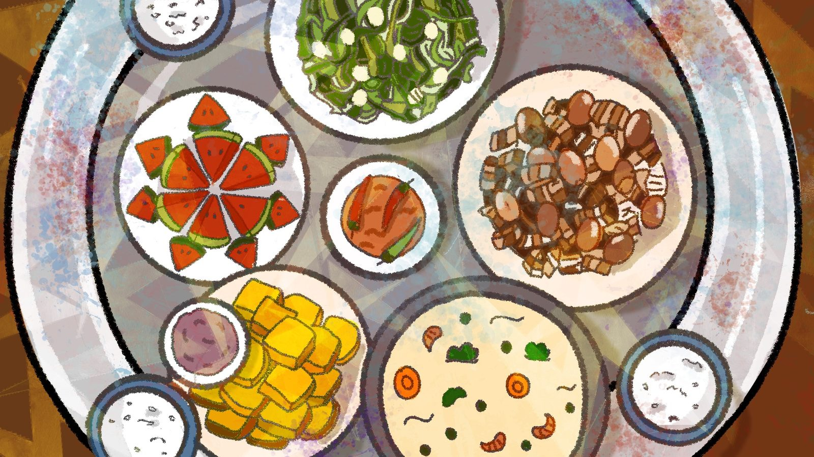
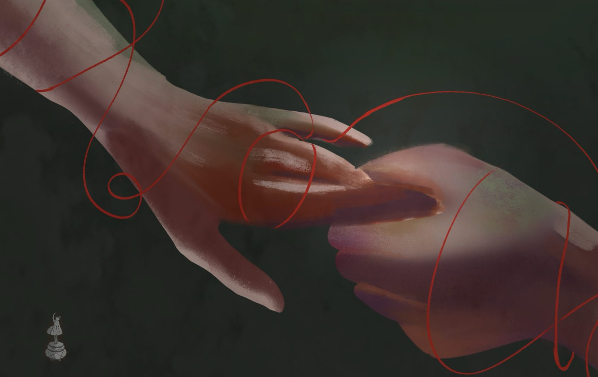
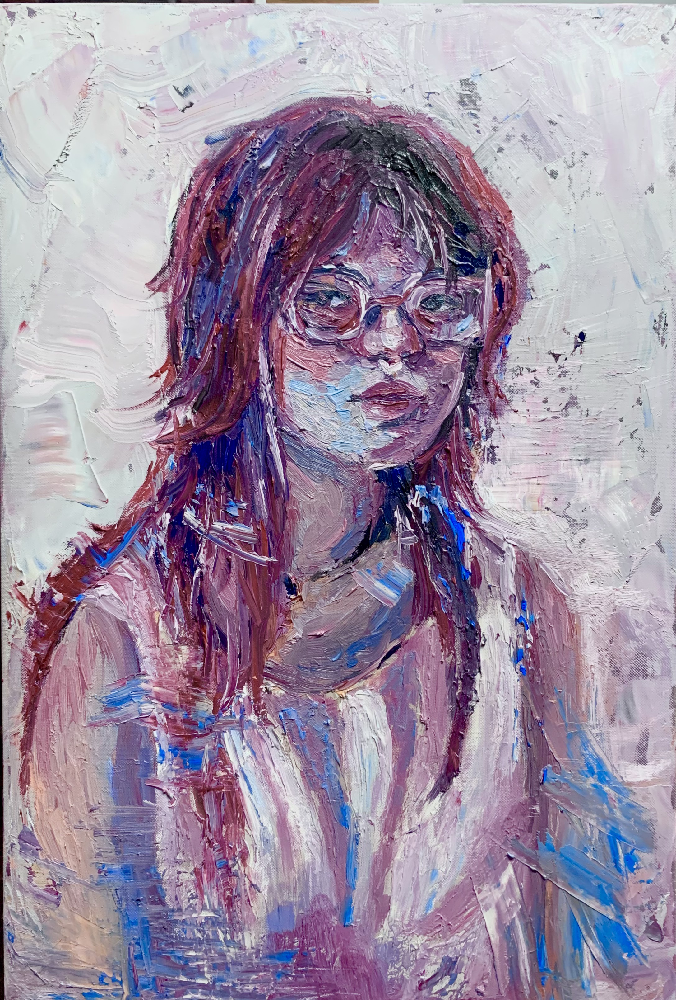
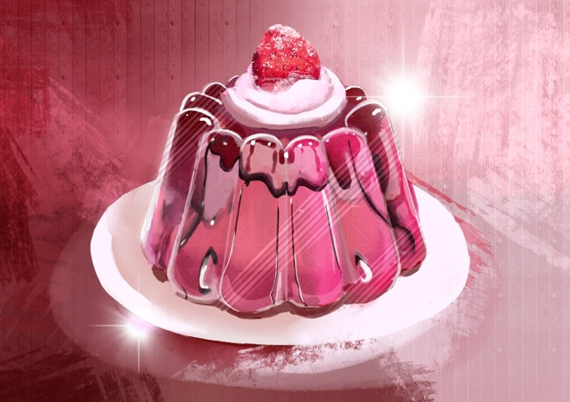

Featured Work
A few favorites from Animation and Web Design

 animation.html
animation.html

web_design.exe

traditional_painting.html

illustration_zone.exe
organic.exe
ORGAN(IC)
An interactive installation exploring the biological parallels between humans and nature, built with physical sensors and real-time visuals.
★ COMING SEPTEMBER 2026 ★